Retratos con concepto, producciones fotográficas y proyectos personales.
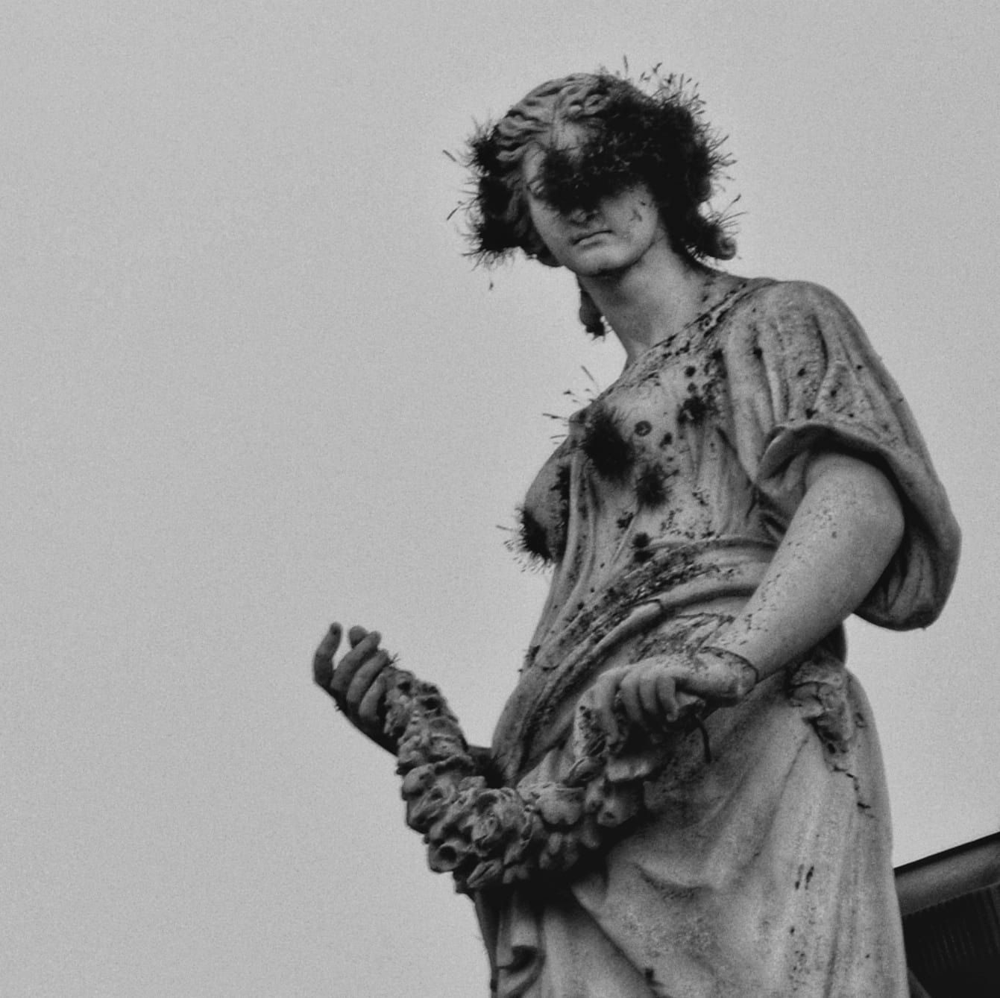
Retratos que buscan un gesto real, no una sonrisa forzada a cámara.
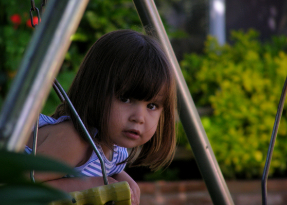
Bandas, egresados, sesiones personales — siempre buscando personalidad antes que perfección técnica.
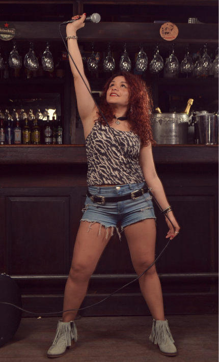
Serie conceptual realizada durante la facultad, explorando la ausencia y la memoria a través de sombra, gesto y archivo.
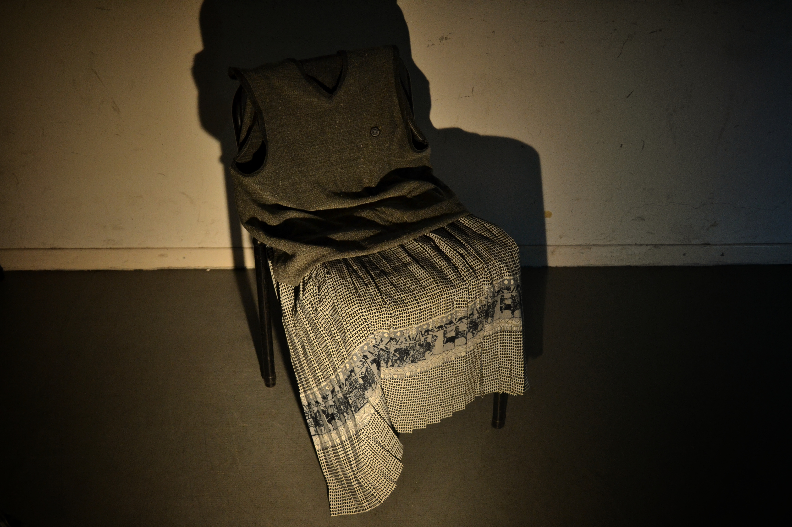
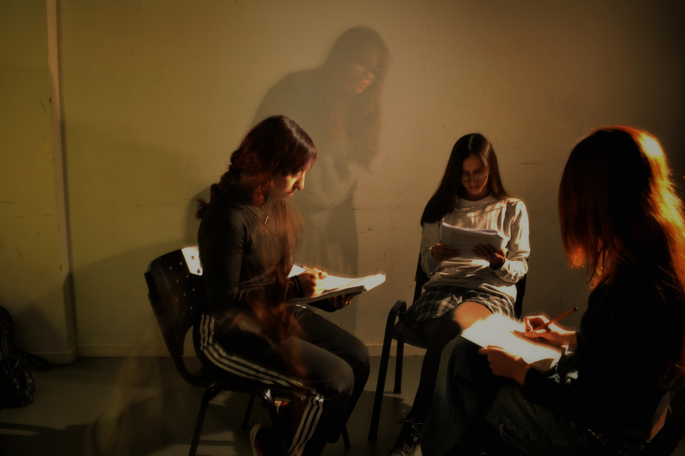
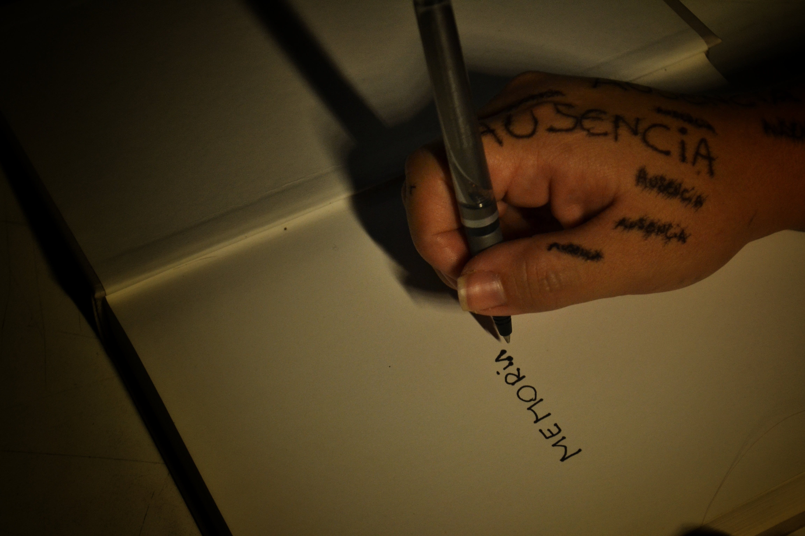
Un costado más personal: luz, textura y paciencia.
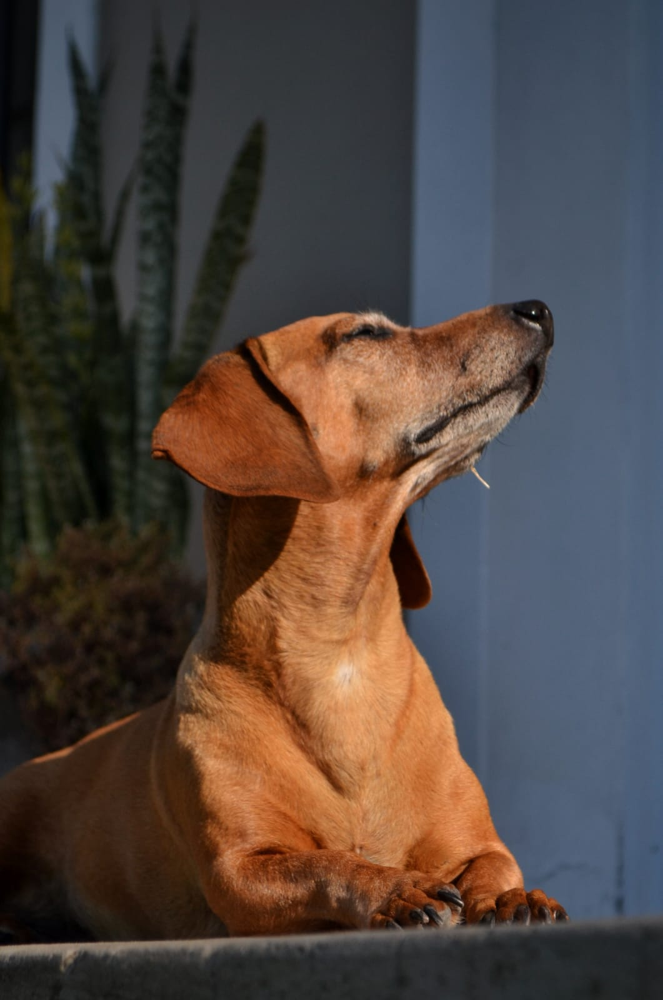
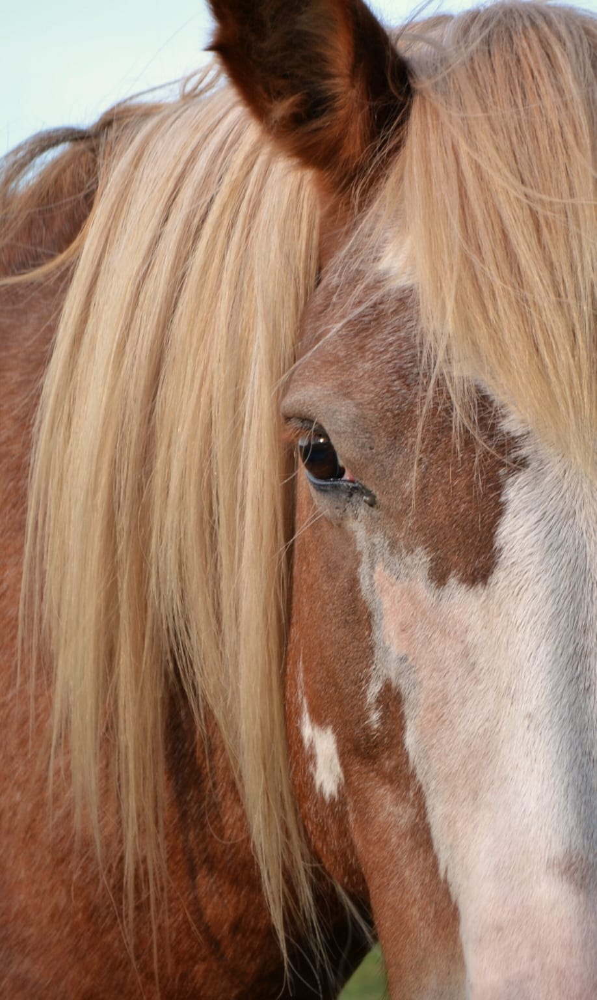
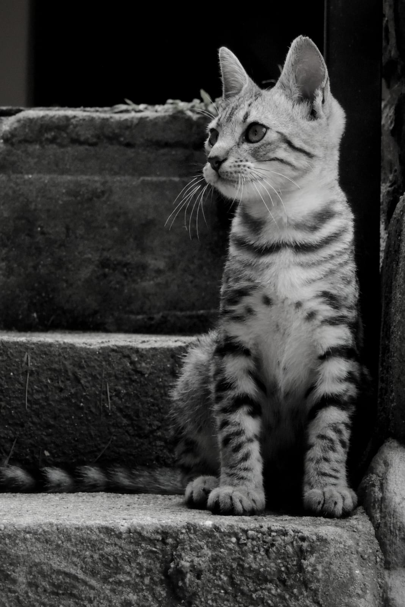
Cerámica, accesorios y fotografía de stock gastronómico — el mismo cuidado de luz, en otra escala.
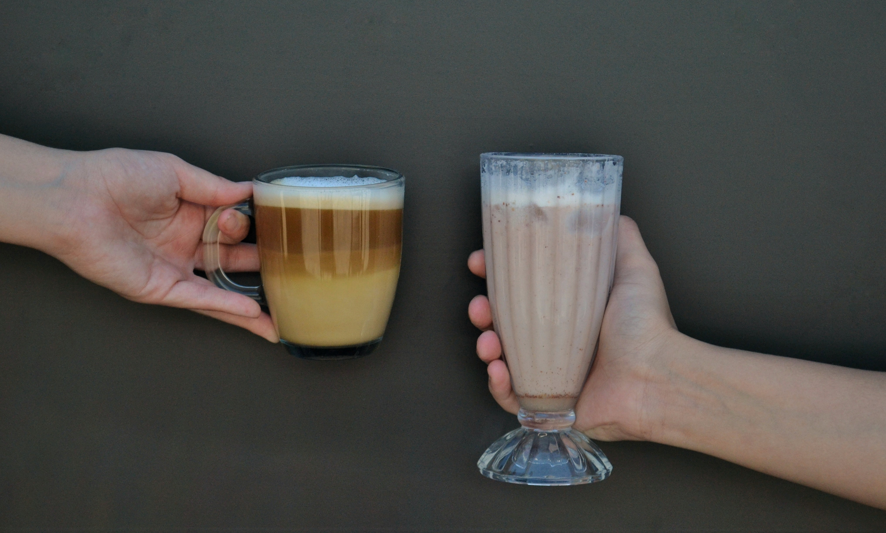
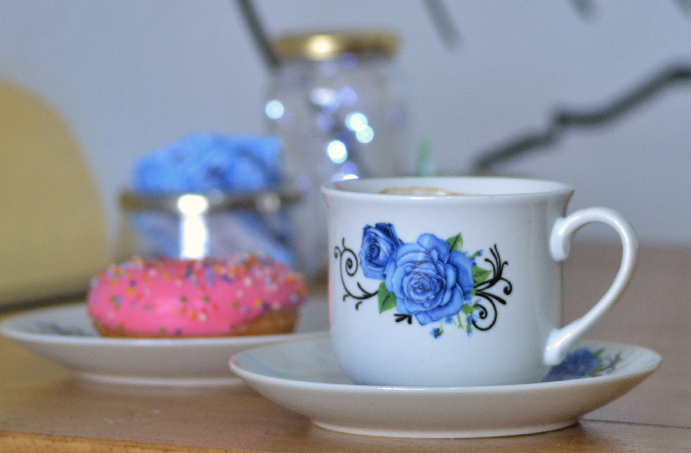
Sesiones, retratos con concepto, proyectos personales o campañas de producto: si tenés una idea, armamos juntas la puesta en escena, desde el concepto hasta la toma final.
Sofia Sanchez